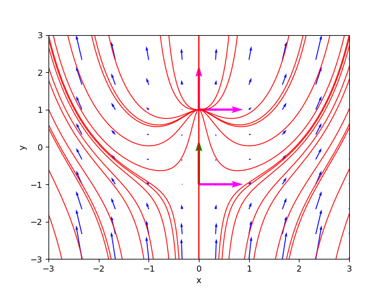
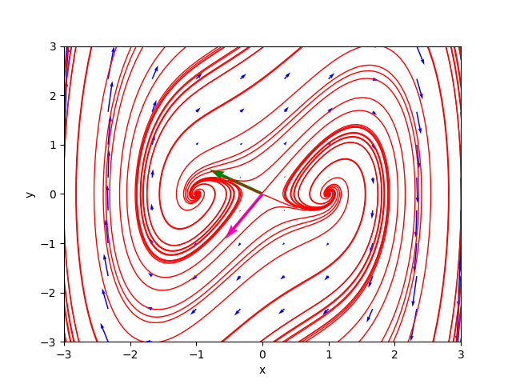
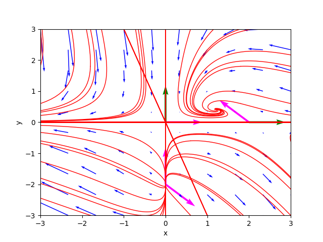
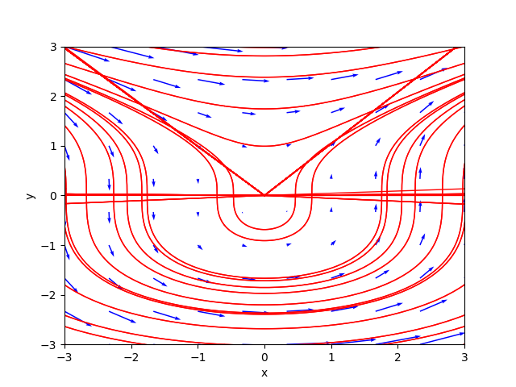
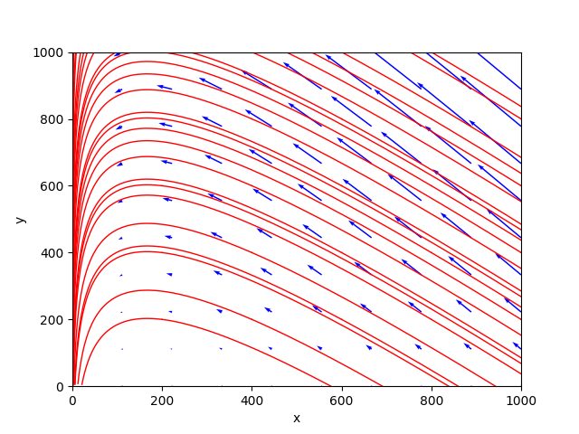
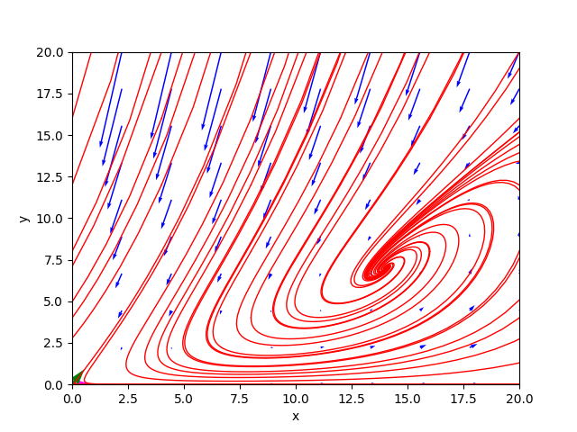
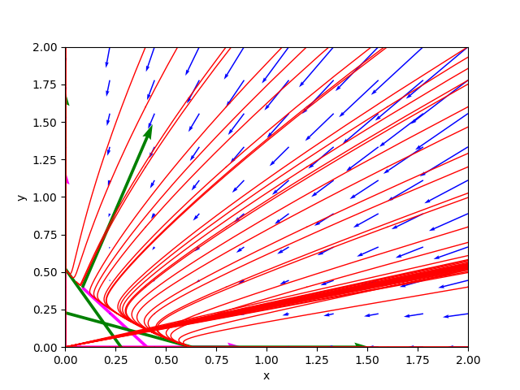
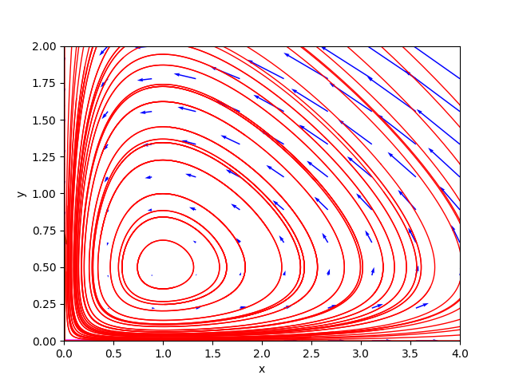
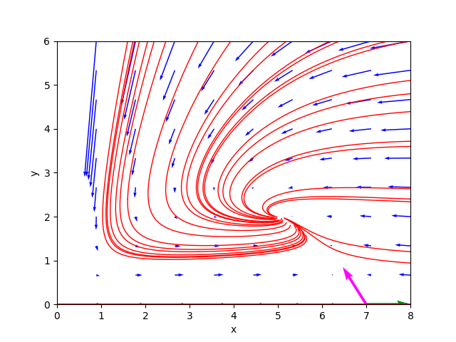

Analizzatore di un sistema dinamico non lineare e autonomo sul piano tramite il teorema di Hartman-Grobman
Questo post presenta il programma Python nonlin-auton-plane-sys-hartman-analyzer.py e la sua usage in linea di comando.
Il programma analizza, utilizzando sia tecniche simboliche (tramite SymPy) che tecniche numeriche (tramite NumPy),
il comportamento di un sistema dinamico non lineare e autonomo sul piano
definito da un sistema di due equazioni differenziali:
$$ \begin{equation}
\begin{cases}
x'(t) = P(x, y)
\\
y'(t) = Q(x, y)
\end{cases}
\end{equation} $$
dove $P$ e $Q$ sono due funzioni non lineari di $x$ e $y$.
Il programma dapprima determina i punti critici e se essi siano in numero finito (il programma non supporta un numero infitino di punti critici),
determina se essi siano iperbolici o non iperbolici analizzando gli autovalori e gli autovettori della matrice jacobiana calcolata in ciascun punto critico;
poi solamente per i punti critici iperbolici il programma li classifica nella opportuna categoria
analizzando la tipologia e la stabilità del sistema lineare ottenuto applicando il teorema di teorema di Hartman-Grobman.
Infine il programma traccia anche il ritratto delle fasi sul piano che fornisce una analisi qualitativa del comportamento delle traiettorie
su cui disegna anche gli autovettori (qualora essi non siano complessi) delle matrici a coefficienti costanti che rappresentano i sistemi linearizzati nei punti critici iperbolici.
Fondamentalmente il teorema di Hartman-Grobman dimostra che il comportamento di un sistema dinamico nell'intorno di un punto critico iperbolico
è qualitativamente simile a quello della sua linearizzazione intorno a quel punto e ne fornisce la formula di linearizzazione che è basata
sulla matrice jacobiana del sistama originale calcolata in tale punto critico.
Per cui studiando tale linearizzazione, che è più agevole, si possono studiare indirettamente alcune caratteristiche del sistema originale.
Si ringrazia la prof.ssa Fausta D'Acunzo di Preparazione 2.0 per il supporto teorico fornito sui sistemi non lineari e autonomi di equazioni differenziali.
Per ottenere il codice si veda il paragrafo Download del codice completo in fondo a questo post.
Per un approfondimento sullo studio dei sistemi lineari e omogenei sul piano a coefficienti costanti si veda il post
Analizzatore di un sistema dinamico, lineare e omogeneo sul piano a coefficienti costanti pubblicato sempre su questo sito web.
Convenzioni
In questo post le convenzioni adoperate sono le seguenti:
- $t$ è la variabile indipendente tempo.
- $x(t)$ e $y(t)$ sono le due funzioni incognite del sistema.
- $J$ indica la matrice jacobiana.
- $J_{(x_i, y_i)}$ indica la matrice jacobiana calcolata nel punto $\left[\begin{matrix} x_i & y_i \end{matrix} \right]^\dag$.
- $\lambda_{i_1}$ e $\lambda_{i_2}$ sono i due autovalori della matrice $J_{(x_i, y_i)}$.
Definizioni
In questo post valgono le seguenti definizioni:
-
Sistema autonomo: un sistema di equazioni differenziali ordinarie che non dipendono esplicitamente dalla variabile indipendente $t$.
-
Punto critico: un punto dove $\frac{dx}{dt}$ e $\frac{dy}{dt}$ calcolati in tale punto siano uguali a $0$ per ogni $t$.
-
Punto stazionario o di equilibrio: un punto critico che sia di minimo relativo o di massimo relativo, e non invece un punto di sella.
-
Matrice jacobiana: è la matrice 2x2 i cui elementi sono le derivate parziali prime delle funzioni $P(x, y)$ e $Q(x, y)$ rispetto a $x$ e $y$.
-
Punto iperbolico: un punto critico $\left[\begin{matrix} x_i & y_i \end{matrix} \right]^\dag$ tale che
la matrice $J_{(x_i, y_i)}$ che linearizza il sistema iniziale in tale punto critico non abbia autovalori con parte reale uguale a $0$.
La parola "iperbolico" è dovuta al fatto che sul piano le traiettorie vicine al punto iperbolico giacciono su tratti di iperbole centrate in tal punto rispetto ad un opportuno sistema di riferimento.
-
Punto non iperbolico: un punto critico $\left[\begin{matrix} x_i & y_i \end{matrix} \right]^\dag$ tale che
la matrice $J_{(x_i, y_i)}$ che linearizza il sistema iniziale in tale punto critico abbia autovalori uguali a zero oppure immaginari puri (quindi con parte reale uguale a $0$).
Funzionalità del programma
Il programma prende in input, tramite linea di comando, la coppia di funzioni non lineari $P(x,y)$ e $Q(x,y)$
che rappresentano il sistema da studiare nella forma:
$$ \begin{equation}
\begin{cases}
x'(t) = P(x, y)
\\
y'(t) = Q(x, y)
\end{cases}
\end{equation} $$
e ne determina le seguenti caratteristiche:
- L'insieme dei punti critici, risolvendo il sistema di equazioni: $$ \begin{equation} \begin{cases} P(x, y) = 0 \\ Q(x, y) = 0 \end{cases} \end{equation} $$ Se i punti critici sono infiniti, il programma non effettua altre elaborazioni e salta a disegnare il ritratto delle fasi.
- La tipologia dei punti critici, divisi tra iperbolici vs non iperbolici studiando la parte reale degli autovalori della matrice jacobiana calcolata per ogni punto critico: se la parte reale è diversa da zero, il punto è di tipo iperbolico, altrimenti (quindi almeno un autovalore è uguale a zero oppure un immaginario puro) il punto è di tipo non iperbolico.
- Gli autovalori e gli autovettori della matrice jacobiana $J_{(x_i, y_i)}$, distinguendo i vari casi tra reali vs complessi, segno (della parte reale) concorde o discorde, casi degenere (molteplicità geometrica minore di 2); in questo ultimo caso il programma calcola gli autovettori generalizzati tramite un algoritmo basato sui blocchi di Jordan.
- La classe dei punti critici iperbolici, divisi tra stabile vs instabile e tra nodo, punto, sella, singolare, degenere ed eventuali loro combinazioni in funzione del segno degli autovalori della matrice jacobiana calcolata per ogni punto critico iperbolico.
- Le traiettorie, tracciate in rosso e calcolate risolvendo numericamente il sistema di equazioni differenziali variando in modo discreto la condizione iniziale al tempo $t=0$.
- Il gradiente, tracciato come campo vettoriale con frecce di colore blu; la lunghezza delle frecce indica il valore del modulo del gradiente, il verso indica la direzione in cui il vettore gradiente tende a $\mathbf{0}$.
- Gli autovettori, disegnati solo se hanno le componenti reali; un autovettore corrispondente a un autovalore positivo è disegnato con una freccia color magenta, un autovettore corrispondente a un autovalore negativo è disegnato con una freccia color verde.
L'usage del programma
Per ottenere l'usage del programma nonlin-auton-plane-sys-hartman-analyzer.py è sufficiente eseguire il seguente comando:
$ python nonlin-auton-plane-sys-hartman-analyzer.py --helpusage: nonlin-auton-plane-sys-hartman-analyzer.py [-h] [--version] --dx_dt
FUNC_DX_DT_BODY --dy_dt
FUNC_DY_DT_BODY
[--t_end T_END]
[--t_num_of_samples T_NUM_OF_SAMPLES]
[--x0_begin X0_BEGIN]
[--x0_end X0_END]
[--x0_num_of_samples X0_NUM_OF_SAMPLES]
[--y0_begin Y0_BEGIN]
[--y0_end Y0_END]
[--y0_num_of_samples Y0_NUM_OF_SAMPLES]
[--font_size FONT_SIZE]
nonlin-auton-plane-sys-hartman-analyzer.py analyzes a dynamyc system modeled
by a nonlinear planar system using Hartman theorem
optional arguments:
-h, --help show this help message and exit
--version show program's version number and exit
--dx_dt FUNC_DX_DT_BODY
dx/dt=P(x, y) body (lamba format)
--dy_dt FUNC_DY_DT_BODY
dy/dt=Q(x, y) body (lamba format)
--t_end T_END In the phase portait diagram, it is the final value
of the interval of variable t (starting value of t is 0).
For backward time trajectories, t goes from -t_end to 0;
for forward time trajectories, t goes from 0 to t_end.
--t_num_of_samples T_NUM_OF_SAMPLES
In the phase portait diagram, it is the number of samples
of variable t between -t_end and 0
for backward time trajectories
and also it is the number of samples of variable t
between 0 and t_end for forward time trajectories
--x0_begin X0_BEGIN In the phase portait diagram, it is the starting
value of the interval of initial condition x0
--x0_end X0_END In the phase portait diagram, it is the final
value of the interval of initial condition x0
--x0_num_of_samples X0_NUM_OF_SAMPLES
In the phase portait diagram, it is the number of samples
of initial condition x0 between x0_begin and x0_end
--y0_begin Y0_BEGIN In the phase portait diagram, it is the starting value
of of interval for initial condition y0
--y0_end Y0_END In the phase portait diagram, it is the final value
of intervalfor initial condition y0
--y0_num_of_samples Y0_NUM_OF_SAMPLES
In the phase portait diagram, it is the number of samples
of initial condition y0 between y0_begin and y0_end
--font_size FONT_SIZE
font size-
-h, --help: mostra l'usage del programma e termina l'esecuzione.
-
--version: mostra la versione del programma e termina l'esecuzione.
-
--dx_dt: espressione lambda della funzione $P(x,y)$.
Questa opzione obbligatoria.
-
--dy_dt: espressione lambda della funzione $Q(x,y)$.
Questa opzione è obbligatoria.
-
--t_end: intervallo della variabile $t$ tra 0 e t_end; (default 100.0).
Nel ritratto delle fasi, le traiettorie backward sono disegnate facendo variare il tempo tra -t_end e 0 mentre le traiettorie forward sono disegnate facendo variare il tempo tra 0 e t_end.
-
--t_num_of_samples: nel ritratto delle fasi è indica il numero di valori discreti di $t$ tra 0 e t_end per tracciare le traiettorie forward;
analogamente, per le traiettorie backward, indica il numero di valori discreti di $t$ tra -t_end e 0; (default: 10).
-
--x0_begin e --x0_end: nel ritratto delle fasi indica intervallo di variazione della condizione iniziale $x_0$; (default rispettivamente: -5.0 e 5.0).
-
--x0_num_of_samples: nel ritratto delle fasi indica il numero di valori discreti di $x_0$ nell'intervallo specificato dalla opzione precedente; (default: 6).
-
--y0_begin e --y0_end: nel ritratto delle fasi indica intervallo di variazione della condizione iniziale $y_0$; (default rispettivamente: -5.0 e 5.0).
-
--y0_num_of_samples: nel ritratto delle fasi indica il numero di valori discreti di $y_0$ nell'intervallo specificato dalla opzione precedente; (default: 6).
-
--font_size: dimensione del font di tutte le label presenti nelle figure generate dal programma; (default: 10).
Esempi
Seguono una serie di esempi, tutti disponibili su GitHub a questo link nonlin-auton-plane-sys-hartman-analyzer-examples.
Alcuni di essi sono descritti in dettaglio qui di seguito, per altri vi è solo mostrato il ritratto delle fasi e si rimanda al corrispondente script su GitHub per la linea di comando.
Esempio n° 01
Lo script shell di questo esempio è example_01.sh.
Il sistema è costituito dalla seguente coppia di equazioni differenziali:
$$ \begin{equation}
\begin{cases}
x' = x
\\
y' = x^2 + y^2 - 1
\end{cases}
\end{equation} $$
Per studiare il comportamento di tale sistema si esegua il comando:
$ python nonlin-auton-plane-sys-hartman-analyzer.py \
--dx_dt "x" \
--dy_dt "x**2 + y**2 - 1" \
--t_num_of_samples 500 \
--x0_begin -3 --x0_end 3 \
--y0_begin -3 --y0_end 3Critical point(s) : [(0, -1), (0, 1)]
Formal Jacobian :
⎡ 1 0 ⎤
⎢ ⎥
⎣2⋅x 2⋅y⎦
*************************
Critical point : (0, -1)
Jacobian at c.p. :
⎡1 0 ⎤
⎢ ⎥
⎣0 -2⎦
Determinant : -2.0
Eigenvalues : 1.0 -2.0
Eigenvector 1 : [1.0, 0.0]
Eigenvector 2 : [0.0, 1.0]
Type of c.p. : Hyperbolic
Kind of critical point(s) : saddle point
*************************
Critical point : (0, 1)
Jacobian at c.p. :
⎡1 0⎤
⎢ ⎥
⎣0 2⎦
Determinant : 2.0
Eigenvalues : 1.0 2.0
Eigenvector 1 : [1.0, 0.0]
Eigenvector 2 : [0.0, 1.0]
Type of c.p. : Hyperbolic
Kind of critical point(s) : unstable nodeInoltre entrambi sono iperbolici e gli autovalori della matrice jacobiana calcolata nel punto $\left[\begin{matrix} 0 & -1 \end{matrix} \right]^\dag$ hanno segno discorde e quindi il primo punto critico è classificato come punto sella mentre gli autovalori della matrice jacobiana calcolata nel punto $\left[\begin{matrix} 0 & 1 \end{matrix} \right]^\dag$ sono entrambi positivi, quindi il secondo punto critico è classificato come nodo instabile.
Il ritratto delle fasi generato dal programma è il seguente:

Il ritratto delle fasi di example_01.sh.
Esempi n° 02, 03, 04
Per brevità questi tre esempi non sono mostrati nel dettaglio. Gli script shell di questi tre esempi sono rispettivamente:
example_02.sh
example_03.sh
example_04.sh
I ritratti delle fasi generati dal programma sono rispettivamente:

Il ritratto delle fasi di example_02.sh.

Il ritratto delle fasi di example_03.sh.

Il ritratto delle fasi di example_04.sh.
Esempio n° 05 epidemia
Questo esempio descrive un semplice modello di diffusione di un'epidemia in una città.
Anche questo esempio per brevità non è mostrato in dettaglio; il corrispondente script shell è
example_05_epidemic.sh
Il ritratto delle fasi generato dal programma è il seguente:

Il ritratto delle fasi di example_05_epidemic.sh.
Esempio n° 06 specie infettata
Questo esempio descrive l'evolversi di una popolazione di animali sani di una specie, rappresentati dalla variabile $x$,
e la sottopopolazione di animali infetti, rappresentanti dalla variabile $y$, che non guariscono mai una volta infettati,
entrambe misurate in milioni di esemplari.
Lo script shell di questo esempio è example_06_infected_species.sh.
Il sistema è costituito dalla seguente coppia di equazioni differenziali:
$$ \begin{equation}
\begin{cases}
x' = (b-d)x - \delta y & b=4, d=1, \delta=6
\\
y' = \tau y (x - y) - (\delta + d) y & \tau = 1
\end{cases}
\end{equation} $$
Per studiare il comportamento di tale sistema si esegua il comando:
$ python nonlin-auton-plane-sys-hartman-analyzer.py \
--dx_dt "(4.0 - 1.0) * x - 6.0 * y" \
--dy_dt "1.0 * y * (x - y) - (6.0 + 1.0) * y" \
--t_num_of_samples 500 \
--x0_begin 0 --x0_end 20 \
--y0_begin 0 --y0_end 20Critical point(s) : [(0.0, 0.0), (14.0, 7.0)]
Formal Jacobian :
⎡ 3.0 -6.0 ⎤
⎢ ⎥
⎣1.0⋅y 1.0⋅x - 2.0⋅y - 7.0⎦
*************************
Critical point : (0.0, 0.0)
Jacobian at c.p. :
⎡3.0 -6.0⎤
⎢ ⎥
⎣0.0 -7.0⎦
Determinant : -21.0
Eigenvalues : 3.0 -7.0
Eigenvector 1 : [1.0, 0.0]
Eigenvector 2 : [0.5144957554275265, 0.8574929257125441]
Type of c.p. : Hyperbolic
Kind of critical point(s) : saddle point
*************************
Critical point : (14.0, 7.0)
Jacobian at c.p. :
⎡3.0 -6.0⎤
⎢ ⎥
⎣7.0 -7.0⎦
Determinant : 21.0
Eigenvalues : (-2+4.12310562j) (-2-4.12310562j)
Eigenvector 1 : [(0.52414241+0.43221891j), (0.73379938+0j)]
Eigenvector 2 : [(0.52414241-0.43221891j), (0.73379938-0j)]
Type of c.p. : Hyperbolic
Kind of critical point(s) : stable focusInoltre entrambi sono iperbolici e gli autovalori della matrice jacobiana calcolata nel punto $\left[\begin{matrix} 0 & 0 \end{matrix} \right]^\dag$ hanno segno discorde e quindi il primo punto critico è classificato come punto sella mentre gli autovalori della matrice jacobiana calcolata nel punto $\left[\begin{matrix} 14 & 7 \end{matrix} \right]^\dag$ sono complessi coniugati con parte reale negativa, quindi il secondo punto critico è classificato come focus stabile.
Il ritratto delle fasi generato dal programma è il seguente:

Il ritratto delle fasi di example_06_infected_species.sh.
Esempio n° 07 specie in competizione
Questo esempio descrive un semplice di due specie in competizione tra loro in un ambiente in cui l'approvvigionamento alimentare comune è limitato.
Anche questo esempio per brevità non è mostrato in dettaglio; il corrispondente script shell è
example_07_competing_species.sh
Il ritratto delle fasi generato dal programma è il seguente:

Il ritratto delle fasi di example_07_competing_species.sh.
Esempio n° 08 Lotka-Volterra
Questo esempio descrive la dinamica di un ecosistema in cui interagiscono soltanto due specie animali: una delle due come predatore (modellata dalla variabile $y$),
l'altra come la sua preda (modellata dalla variabile $x$) in accordo con il sistema pubblicato da Lotka nel 1925 e indipendentemente da Volterra nel 1926.
Lo script shell di questo esempio è example_08_lotka_volterra.sh.
Il sistema è costituito dalla seguente coppia di equazioni differenziali:
$$ \begin{equation}
\begin{cases}
x' = x (A - By) & A=\frac{2}{3}, B=\frac{4}{3}
\\
y' = y (Cx - D) & C=\frac{9}{10}, D=\frac{9}{10}
\end{cases}
\end{equation} $$
Per studiare il comportamento di tale sistema si esegua il comando:
$ python nonlin-auton-plane-sys-hartman-analyzer.py \
--dx_dt "x * (0.666 - 1.333 * y)" \
--dy_dt "y * (0.9 * x - 0.9)" \
--t_num_of_samples 500 \
--x0_begin 0 --x0_end 4 \
--y0_begin 0 --y0_end 2Critical point(s) : [(0.0, 0.0), (1.0, 0.499624906226557)]
Formal Jacobian :
⎡0.666 - 1.333⋅y -1.333⋅x ⎤
⎢ ⎥
⎣ 0.9⋅y 0.9⋅x - 0.9⎦
*************************
Critical point : (0.0, 0.0)
Jacobian at c.p. :
⎡0.666 0.0 ⎤
⎢ ⎥
⎣ 0.0 -0.9⎦
Determinant : -0.5994
Eigenvalues : 0.666 -0.9
Eigenvector 1 : [1.0, 0.0]
Eigenvector 2 : [0.0, 1.0]
Type of c.p. : Hyperbolic
Kind of critical point(s) : saddle point
*************************
Critical point : (1.0, 0.499624906226557)
Jacobian at c.p. :
⎡-4.44089209850063e-16 -1.333⎤
⎢ ⎥
⎣ 0.449662415603901 0.0 ⎦
Determinant : 0.5994000000000004
Eigenvalues : (0+0.77420927j) (0-0.77420927j)
Eigenvector 1 : [(-0.86472998+0j), (0+0.50223704j)]
Eigenvector 2 : [(-0.86472998-0j), (0-0.50223704j)]
Type of c.p. : Non-hyperbolic
So Hartman theorem cannot be applied to this critical pointIl ritratto delle fasi generato dal programma è il seguente:

Il ritratto delle fasi di example_08_lotka_volterra.sh.
Esempi n° 09 e 10 Holling-Tanner
Questa coppia di esempi descrive come il precedente una dinamica di un ecosistema in cui interagiscono soltanto due specie animali: una delle due come predatore (modellata dalla variabile $y$),
l'altra come la sua preda (modellata dalla variabile $x$), ma seguendo un sistema di equazioni differente, detto di Holling-Tanner.
Gli script shell di questa coppia di esempi sono example_09_holling-tanner_0_dot5.sh e
example_10_holling_tanner_2dot5.sh.
Il sistema è costituito dalla seguente coppia di equazioni differenziali:
$$ \begin{equation}
\begin{cases}
x' = x (1 - \frac{x}{7}) - \frac{6xy}{7 + 7x}
\\
y' = 0.2 y (1 - \frac{Ny}{x})
\end{cases}
\end{equation} $$
e i due esempi differiscono solo per la costante $N$ che vale $0.5$ per il primo e $2.5$ per il secondo.
Per studiare il comportamento di tale sistema per $N=0.5$ si esegua il comando:
$ python nonlin-auton-plane-sys-hartman-analyzer.py \
--dx_dt "x * (1 - x/7) - 6*x*y/(7+7*x)" \
--dy_dt "0.2*y * (1 - (0.5*y)/x)" \
--t_num_of_samples 500 \
--x0_begin 0 --x0_end 8 \
--y0_begin 0 --y0_end 6Critical point(s) : [(-7.0, -14.0), (1.0, 2.0), (7.0, 0.0)]
Formal Jacobian :
⎡ 42⋅x⋅y 2⋅x 6⋅y -6⋅x ⎤
⎢────────── - ─── - ─────── + 1 ─────── ⎥
⎢ 2 7 7⋅x + 7 7⋅x + 7 ⎥
⎢(7⋅x + 7) ⎥
⎢ ⎥
⎢ 2 ⎥
⎢ 0.1⋅y 0.2⋅y⎥
⎢ ────── 0.2 - ─────⎥
⎢ 2 x ⎥
⎣ x ⎦
*************************
Critical point : (-7.0, -14.0)
Jacobian at c.p. :
⎡3.33333333333333 -1.0⎤
⎢ ⎥
⎣ 0.4 -0.2⎦
Determinant : -0.2666666666666668
Eigenvalues : 3.2162457375544835 -0.08291240422114961
Eigenvector 1 : [0.9932149332261002, 0.11629314862309552]
Eigenvector 2 : [0.28093063252715217, 0.9597280759193689]
Type of c.p. : Hyperbolic
Kind of critical point(s) : saddle point
*************************
Critical point : (1.0, 2.0)
Jacobian at c.p. :
⎡0.285714285714286 -0.428571428571429⎤
⎢ ⎥
⎣ 0.4 -0.2 ⎦
Determinant : 0.11428571428571427
Eigenvalues : (0.04285714+0.33533413j) (0.04285714-0.33533413j)
Eigenvector 1 : [(0.71919495+0j), (0.40754380-0.56273143j)]
Eigenvector 2 : [(0.71919495-0j), (0.40754380+0.56273143j)]
Type of c.p. : Hyperbolic
Kind of critical point(s) : unstable focus
*************************
Critical point : (7.0, 0.0)
Jacobian at c.p. :
⎡-1.0 -0.75⎤
⎢ ⎥
⎣0.0 0.2 ⎦
Determinant : -0.2
Eigenvalues : -1.0 0.2
Eigenvector 1 : [1.0, 0.0]
Eigenvector 2 : [-0.52999894000318, 0.847998304005088]
Type of c.p. : Hyperbolic
Kind of critical point(s) : saddle pointPer studiare il comportamento di tale sistema per $N=2.5$ si esegua il comando:
$ python nonlin-auton-plane-sys-hartman-analyzer.py \
--dx_dt "x * (1 - x/7) - 6*x*y/(7+7*x)" \
--dy_dt "0.2*y * (1 - (2.5*y)/x)" \
--t_num_of_samples 500 \
--x0_begin 0 --x0_end 8 \
--y0_begin 0 --y0_end 6Critical point(s) : [(-1.4, -0.56), (5.0, 2.0), (7.0, 0.0)]
Formal Jacobian :
⎡ 42⋅x⋅y 2⋅x 6⋅y -6⋅x ⎤
⎢────────── - ─── - ─────── + 1 ───────⎥
⎢ 2 7 7⋅x + 7 7⋅x + 7⎥
⎢(7⋅x + 7) ⎥
⎢ ⎥
⎢ 2 ⎥
⎢ 0.5⋅y y⎥
⎢ ────── 0.2 - ─⎥
⎢ 2 x⎥
⎣ x ⎦
*************************
Critical point : (-1.4, -0.56)
Jacobian at c.p. :
⎡4.4 -3.0⎤
⎢ ⎥
⎣0.08 -0.2⎦
Determinant : -0.640000000000001
Eigenvalues : 4.347220505424427 -0.14722050542442328
Eigenvector 1 : [0.9998452761917251, 0.017590442777059078]
Eigenvector 2 : [0.5506931674648844, 0.8347077544311499]
Type of c.p. : Hyperbolic
Kind of critical point(s) : saddle point
*************************
Critical point : (5.0, 2.0)
Jacobian at c.p. :
⎡-0.476190476190476 -0.714285714285714⎤
⎢ ⎥
⎣ 0.08 -0.2 ⎦
Determinant : 0.15238095238095234
Eigenvalues : (-0.33809523+0.19512191j) (-0.33809523-0.19512191j)
Eigenvector 1 : [(0.94830405+0j), (-0.18333878-0.25904886j)]
Eigenvector 2 : [(0.94830405-0j), (-0.18333878+0.25904886j)]
Type of c.p. : Hyperbolic
Kind of critical point(s) : stable focus
*************************
Critical point : (7.0, 0.0)
Jacobian at c.p. :
⎡-1.0 -0.75⎤
⎢ ⎥
⎣0.0 0.2 ⎦
Determinant : -0.2
Eigenvalues : -1.0 0.2
Eigenvector 1 : [1.0, 0.0]
Eigenvector 2 : [-0.52999894000318, 0.847998304005088]
Type of c.p. : Hyperbolic
Kind of critical point(s) : saddle point

Il ritratto delle fasi di example_09_holling_tanner_0dot5.sh.

Il ritratto delle fasi di example_10_holling_tanner_2dot5.sh.
Bibliografia
Stephen Lynch
Dynamical Systems with Applications using Python
Springer
2018Download del codice completo
Il codice completo è disponibile su GitHub.
Questo materiale è distribuito su licenza MIT; sentiti libero di usare, condividere, "forkare" e adattare tale materiale come credi.
Sentiti anche libero di pubblicare pull-request e bug-report su questo repository di GitHub oppure di contattarmi sui miei canali social disponibili nell'angolo in alto a destra di questa pagina.